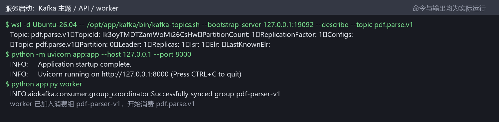
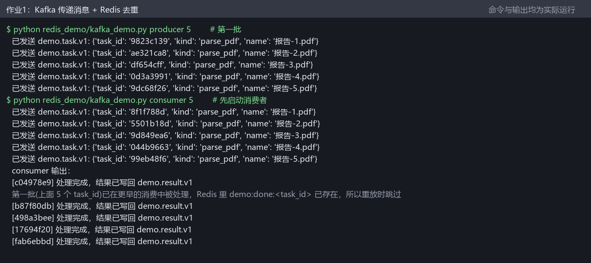
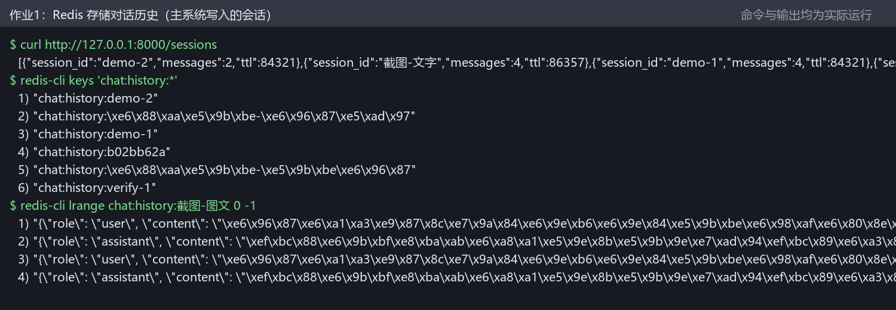
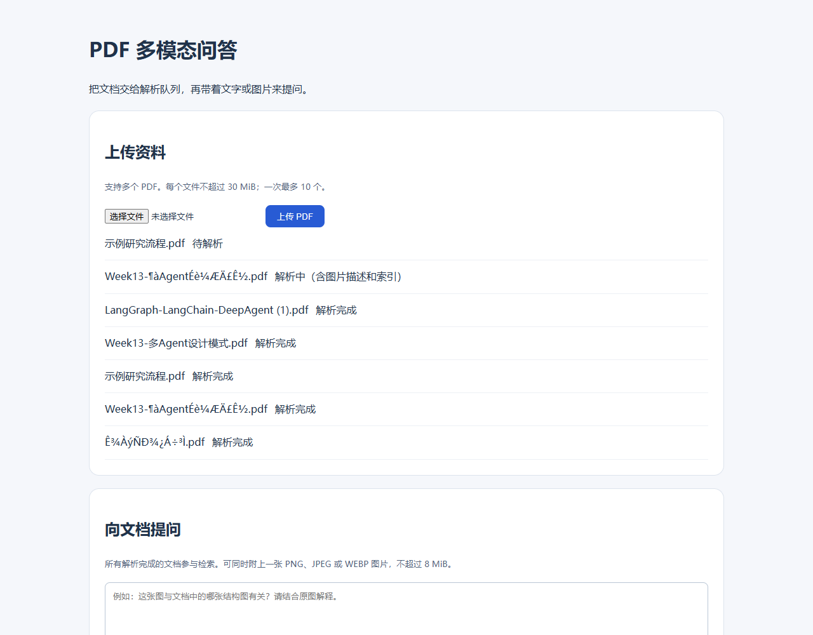
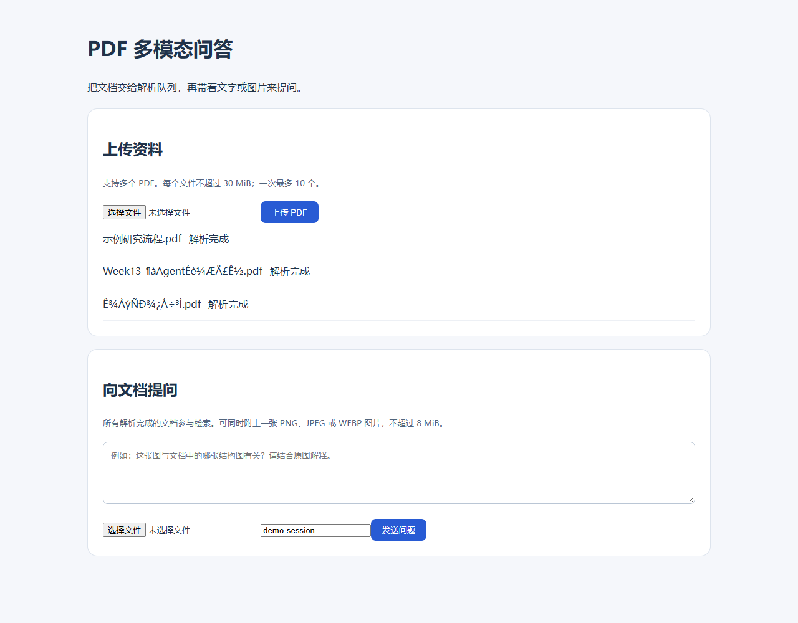
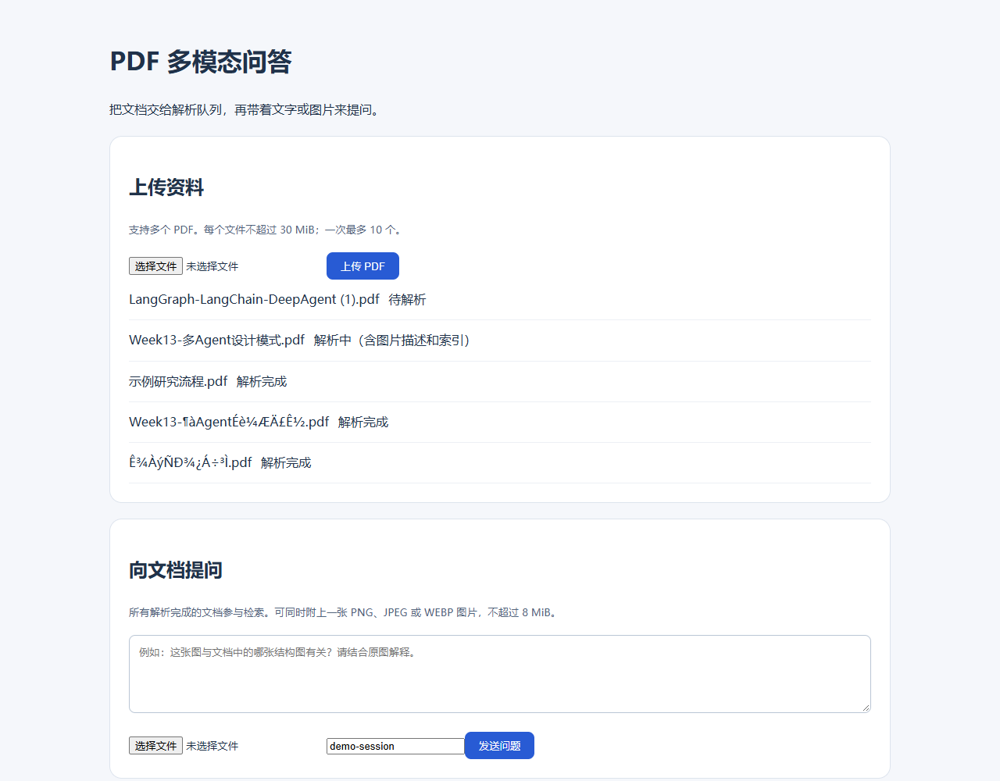
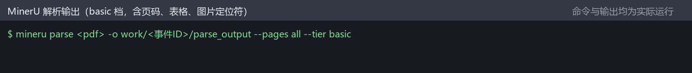
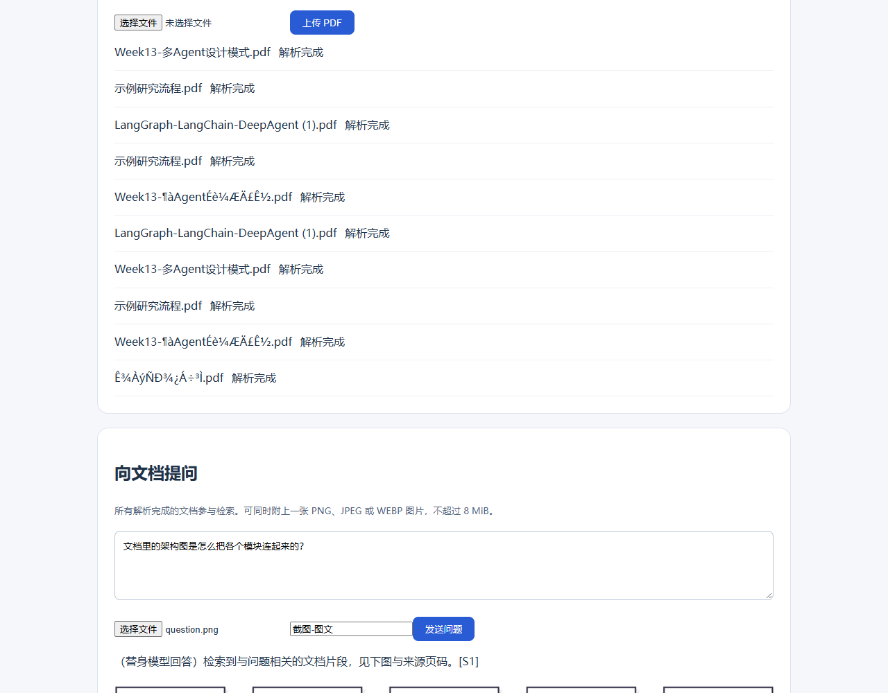
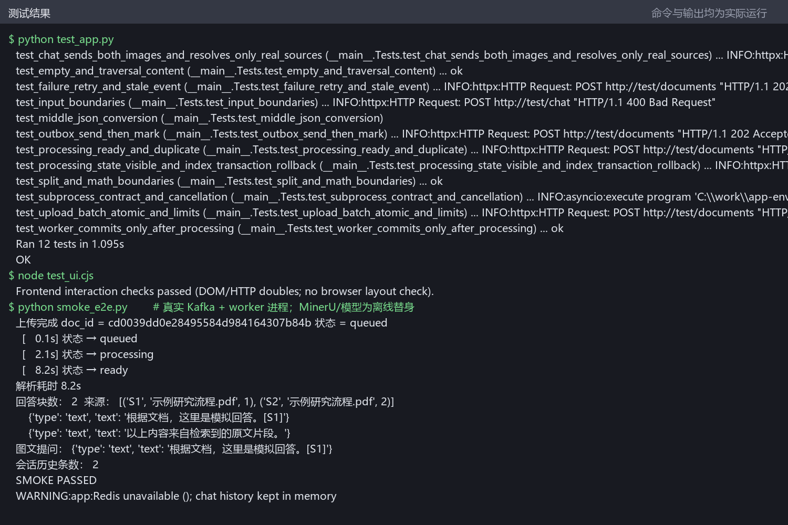

PDF 多模态问答系统 · 运行演示
本页按操作顺序列出实际运行时的截图，配合“截图说明.md”阅读。打开正在运行的问答页面（/app）
1. 服务启动

- Kafka 主题
pdf.parse.v1 已建好（单分区单副本）。
- API 监听 127.0.0.1:8000；解析 worker 作为独立进程加入消费组。
2. 作业1：Kafka 传递消息

- 生产者发送 5 条任务到
demo.task.v1。
- 消费者先于第二批发送启动，逐条处理并把结果写回
demo.result.v1。
- 重复投递的任务由 Redis SETNX 判重后跳过，体现业务幂等。
3. 作业1：Redis 存储对话历史

- 每轮问答以 JSON 追加到
chat:history:<会话号> 这个 List。
LTRIM 只保留最近若干条，EXPIRE 设置过期时间。- 历史按会话号读取，可拼进下一次请求的 messages。
4. 上传后待解析

- 上传 1 份 PDF，接口返回 202，页面显示“待解析”。
- 任务已在 Kafka 中，由 worker 按顺序消费。
5. 解析中

- worker 接手后状态变为“解析中（含图片描述和索引）”。
- 页面每 2 秒轮询，刷新浏览器状态不会丢。
6. 解析完成

- 文字块、图片和向量都写入后才显示“解析完成”。
- 只有“解析完成”的文档参与检索。
7. 多文件上传

- 一次追加两份 PDF（其中一份文件名带空格和括号）也能正常入队。
- 单 worker 按顺序解析，先完成的先变为“解析完成”。
8. MinerU 解析输出

- worker 调用 MinerU 生成 Markdown 内容，保留页码、标题、表格。
- 图片以定位符返回，再由 worker 调
mineru read 取出图片存到 data/media/。
10. 图问 + 文问，图文混排回答

- 问题与提问图片一起提交；图片先转文字描述参与检索，原图随证据一起送视觉模型。
- 回答按“文字 → 文档原图 → 文字”的顺序混排，图片标出来源并给页码链接。
- 回答中的图片来自上传的 PDF，不是模型生成。
12. 测试

- 后端 12 个用例覆盖切块、上传原子性、状态流转、重试、图文请求、middle.json 解析与 Kafka 提交顺序。
- 端到端冒烟覆盖“上传 → Kafka → worker → MinerU → 问答”。